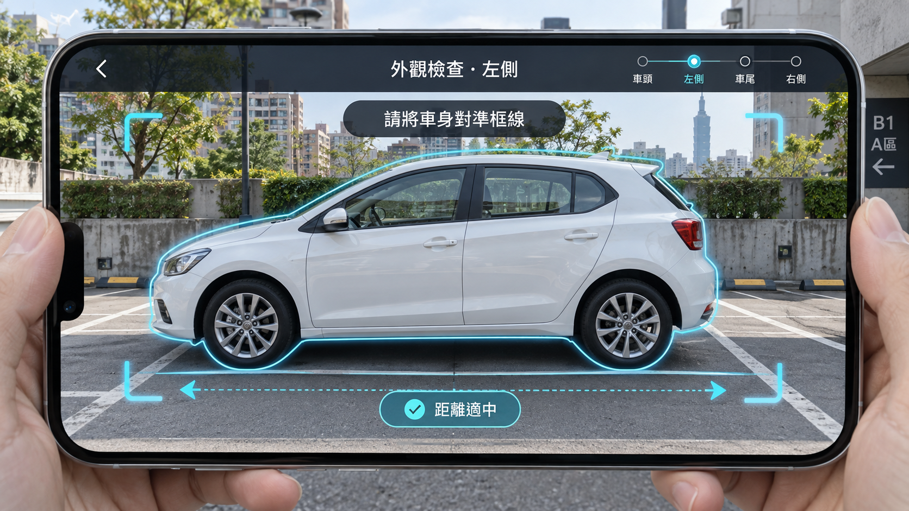
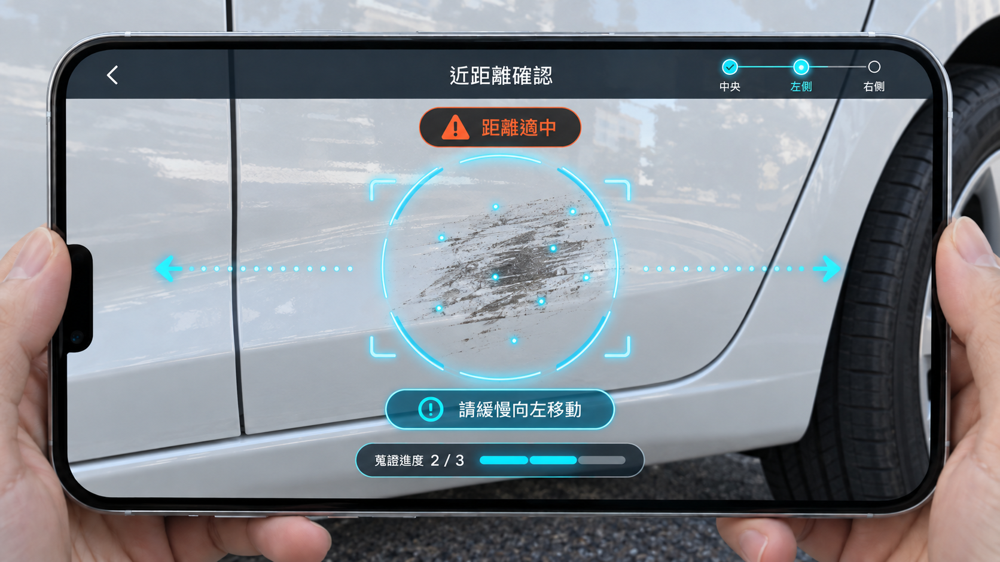
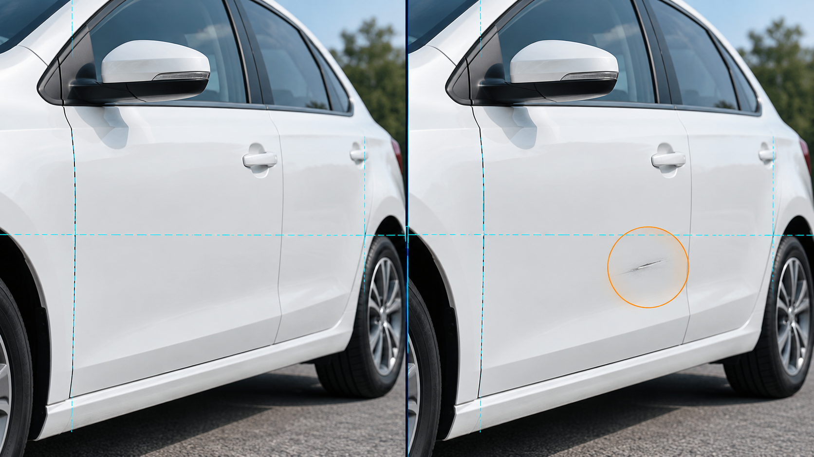
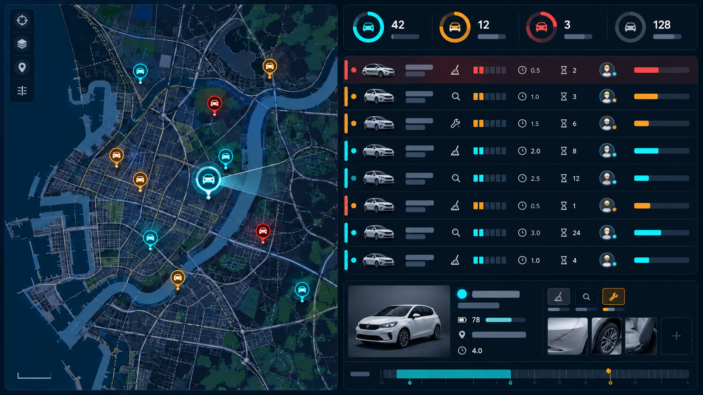

iRent
InspectFlow
AI 智能車況檢查與整備管家
引導掃描 車況辨識 索賠覆核提案摘要
至多 3 項
- 即時引導掃描：拍攝當下檢查位置、距離、角度、清晰度與覆蓋率，合格後自動擷取。
- 歷史車況比對：比對同車輛相同區域的有效影像，辨識新車損、既有損傷與車內髒污。
- 營運與索賠閉環：將異常轉成整備或索賠待審案件，完工後以相同區域影像驗證。
取還車照片目前只完成留存，尚未形成即時管理能力
我們觀察到，現行取還車流程雖然要求使用者上傳照片，但自由拍攝無法確保角度、清晰度與車身覆蓋範圍一致。這使營運人員仍須逐張檢查影像，也讓後續清潔、維修與索賠流程缺少可以直接採用的判斷依據。
| 流程階段 | 主要問題 | 對應需求 |
|---|---|---|
| 拍攝完成 | 使用者按下快門並不代表照片可用。過遠、失焦、逆光、反光、遮擋與漏拍都可能讓車況無法判讀。 | 需要在拍攝當下確認品質 |
| 辨識完成 | 單張異常框無法回答「是否為本次新增」。系統必須取回同車、同區域、時間較早且可比較的基準影像。 | 需要前後影像與多角度證據 |
| 處理完成 | 發現髒污或損傷之後，仍須決定車輛能否出租、建立何種任務、是否進入索賠待審，以及何時恢復上線。 | 需要可執行的後台工作流 |
提案目標：將「拍攝、比較、分流、執行、複檢」串成同一筆可追溯的車況紀錄。
一筆可信的車況資料，串起前台、後台與現場處理
我們將目標對象收斂為租車使用者、後台營運人員，以及清潔與維修人員三類。使用者負責取得合格影像，營運人員在單一工作台完成車況比對、任務安排與索賠審查，現場人員則依任務處理異常。三者共用同一筆車況證據，不必在不同角色與系統間反覆查找資訊。
| 目標角色 | 主要痛點 | 對應解方 |
|---|---|---|
| 租車使用者 | 不知道是否拍對位置，失焦、反光或漏拍通常要等到照片上傳後才被發現。 | 以即時掃描提供位置與品質提示，畫面連續合格後自動擷取，只有異常區域需要補掃。 |
| 後台營運人員 | 需要人工尋找前後照片，並在不同流程中完成車況判斷、派工與索賠確認。 | 以單一工作台集中前後比對、清潔與維修派工，以及依嚴重度排序的索賠候選清單。 |
| 清潔與維修人員 | 工單缺少明確的異常位置與影像，完工後也沒有一致的複檢方式。 | 在任務中附上異常位置與照片，處理完成後要求同區域重新掃描並回傳證據。 |
核心問題：照片品質決定後續判斷上限。若前端影像不可用，再好的辨識模型也無法補回缺失的證據。
InspectFlow 完整解方與資料 Pipeline
針對上述痛點，我們重新設計取還車檢查流程。InspectFlow 先以手機即時掃描協助使用者取得品質一致的照片，再由雲端比對同車輛的歷史影像並判讀車況。系統會依判讀結果建立對應任務，員工完成處理後再以相同區域影像複檢，使本次結果成為下一次檢查可直接使用的基準。
由訂單帶入車號、車型、取還車節點與必拍區域。
連續讀取相機畫面，判斷位置、距離、角度及影像品質。
連續合格後擷取。疑似異常才要求近距離多角度影像。
檢索同車同區域舊照，對齊視角並判讀新增變化。
輸出正常、髒污、損傷或證據不足，附位置與信心。
更新車輛狀態，建立清潔、巡檢、維修或索賠待審。
以相同區域重新掃描，通過後恢復上線並更新基準。
若未發現異常，使用者完成掃描後即可結束流程。只有發現異常或證據不足時，後續角色才會依案件需要接續處理。
即時掃描如何在拍攝當下建立可比較的車況影像
為了從源頭改善照片品質，我們將原本的手動拍照改為即時掃描。App 會持續分析相機預覽畫面，逐幀確認使用者正在拍攝的車身區域、距離、角度與成像品質。當畫面連續達到標準時，系統會自動保存最清晰的影格，讓不同使用者在不同時間取得視角與尺度相近的照片。
1. 區域定位
辨識目前是車頭、左側、車尾、右側、前座或後座，並套用該區域的取景框。
2. 幾何品質
利用車身輪廓與關鍵點估算距離、水平、視角和遮擋，畫面偏離時即時提示移動方向。
3. 成像品質
檢查失焦、手震、曝光、逆光與強反光。未達門檻的影格不進入後續判斷。
4. 穩定擷取
多個連續影格均達標後選取最清晰的一張，避免偶發單幀誤判造成錯拍。
5. 異常觸發
廣角影像若出現疑似刮痕、凹陷或髒污，系統只針對該區要求近距離多角度補掃。
1 至 2 秒是車身已對準且環境可判讀時的單區鎖定目標，並非完成全車檢查所需時間。六區設定將依 iRent 正式規範調整。
手機端功能與 Prototype 完整流程
手機端流程以降低使用者負擔為設計原則。一般情況下，使用者只需依序掃描指定區域，系統會自動完成品質確認與影像擷取。當廣角畫面發現疑似刮痕、凹陷或髒污時，App 才會引導使用者補拍近距離與多角度影像，為後續判讀提供足夠證據。
① 六區引導掃描
畫面框線提示位置與距離。品質連續合格後自動擷取，完成區域同步標記。

② 疑似異常提示
在廣角影像框出刮痕或髒污候選區，顯示原因並引導使用者靠近。

③ 近距離多角度補掃
依中央、左側、右側順序取證。多視角一致性可協助區分反光與表面損傷。

④ 車內整潔檢查
辨識垃圾、污漬及遺留物。嚴重髒污會建立清潔任務，遮蔽損傷時則安排清潔後複檢。
完成條件：必拍區域均取得合格影像，異常補掃完成或明確標示無法補拍，才結束本次檢查並上傳證據。
雲端車況比對的概念
手機端已確保上傳照片具備一致的拍攝位置與品質，因此雲端的主要任務，是確認本次車況與先前紀錄相比是否出現值得處理的變化。系統會以同一車輛、相同區域的歷史照片作為基準，對齊前後影像後整理差異，供後台人員安排後續工作。

跟什麼比對
取得同一車輛、相同區域且時間較早的有效照片，作為本次檢查的車況基準。
大概檢查什麼
比較前後外觀是否出現明顯變化，例如新的表面損傷、髒污或車內整潔問題。
這一步的目的
將差異整理成簡明的車況摘要，協助後台判斷是否需要建立清潔、巡檢、維修或索賠覆核任務。
判讀原則：雲端負責找出並整理前後變化，後台人員仍可查看原始影像，再依營運規則決定實際處理方式。
使用情境：從發現污損到完成整備
以下情境說明 InspectFlow 如何把一次車況檢查轉成實際的營運任務。當使用者還車時掃描到明顯污損，系統會保留異常位置與照片，並依「清潔」分類建立任務。後台人員確認後即可安排員工處理，員工則以相同區域重新拍攝作為完工證據。
App 確認六個指定區域都取得品質合格的影像。
系統標記污損位置、影響範圍與來源照片。
判讀類型直接對應處理任務，並附上異常影像。
營運人員查看證據後，將任務交給合適的整備人員。
員工依原異常位置回傳同區域的完工影像。
污損已排除後關閉任務，並保存新的車況基準。
其他判讀結果
若系統判斷為車身損傷，後台會建立巡檢或維修任務。若前後影像顯示疑似新增損傷，系統則會另外建立索賠候選案件，交由授權人員覆核。
證據不足時的處理
當歷史影像缺失、視角無法比較或污損遮住車身時，系統不會直接認定損傷，而是要求補拍、人工查看，或先完成清潔後再重新掃描。
任務類型、車輛狀態與派工方式可依 iRent 現行營運流程及 API 定義調整。
後台功能與 Prototype 工作畫面
當雲端完成車況判讀後，所有異常會以案件形式進入後台。營運人員可以在同一筆案件中查看前後影像、確認系統建立的任務，並追蹤員工的完工回報。若人員修正 AI 結果，系統也會保存修正內容，作為後續模型校準與流程改善的資料。

① 索賠證據覆核
並列取車前與還車後的同區域照片，顯示時間軸、多角度證據、對齊品質及模型信心。人員可判定新增、既有、誤報或要求補件。

② 車況與任務分流
地圖顯示異常車輛與目前狀態。工作佇列依安全性、預約時間、位置、技能與 SLA 排序，支援清潔、巡檢、維修及拖運。

③ 完工與重新上線
執行人員依原異常區域回傳完工照片。系統比較處理前後影像，通過後更新任務與車輛狀態，未通過則退回重做。
稽核紀錄：保存原始影像、模型版本、門檻、系統建議、人工覆核結果、狀態異動與完工證據，支援客訴或索賠案件回溯。
本頁皆為 Prototype 模擬畫面，欄位與權限可依 iRent 實際後台流程調整。
索賠判斷採用證據鏈與人工覆核
當前後影像出現疑似新增損傷時，InspectFlow 會先檢查照片是否具備足夠的時間關係與可比性，再整理成索賠候選案件。系統的工作是提供完整證據與判讀建議，最終責任與賠償金額仍由授權人員依公司政策及法務規範決定。
案件成立前的五項檢查
- 時間關係：異常首次出現在本次取還車區間內。
- 區域一致：前後照片屬於同一車輛與同一部位。
- 影像可比：視角、尺度、曝光與遮擋程度允許比較。
- 異常持續：近照及多角度影像皆能觀察到同一特徵。
- 既有紀錄排除：歷史車損清單中沒有相同位置與形態。
任一關鍵條件不足：標示「證據不足」並轉人工補證據，不自動歸責。
系統產生的索賠證據包
| 訂單資料 | 會員、車號、取還車時間與地點。 |
| 前後影像 | 同區域基準照、還車照與近距離補掃。 |
| AI 說明 | 異常框、差異區域、類型、嚴重度、信心及限制。 |
| 歷史紀錄 | 既有車損、前次整備與完工照片。 |
| 人工決策 | 覆核者、結論、理由、補件、聯繫及結案紀錄。 |
賠償規則、責任認定與通知程序需遵循和雲既有政策及法務規範。
技術分工與實作可行性
為了兼顧拍攝速度與辨識能力，我們將系統拆成手機端、雲端與營運後台三個部分。手機端負責需要立即回應的拍攝品質判斷，雲端執行計算量較高的歷史影像檢索與車況比較，後台則依企業規則把判讀結果轉成任務。這種分工可以先用現有技術完成 Prototype，再逐步接入真實模型與 iRent 系統。
| 功能模組 | 實作方法 | 落地可行性 | 驗證項目 |
|---|---|---|---|
| 即時掃描 | Flutter Camera 串流、輕量物件偵測、車體關鍵點、模糊與曝光指標。 | 只需輸出品質與導引訊號，可在裝置端低延遲執行，弱網仍可完成拍攝。 | 分手機效能、車型、夜間與停車環境測試鎖定時間。 |
| 歷史影像檢索 | 區域標籤加影像特徵向量，依同車與視角相似度取得基準。 | 先利用訂單與區域縮小範圍，再做相似度排序，資料量可控。 | 確認既有影像覆蓋率及可比較比例。 |
| 對齊與差異 | 特徵點匹配、透視校正、損傷或髒污分割、時序差異分類。 | 把「是否新增」拆成對齊品質與局部差異，結果可留下視覺證據供人工檢查。 | 依異常類型設定召回率、誤報率與拒答門檻。 |
| 營運分流 | 規則引擎、工作流服務、任務優先分數，後續可加入路線最佳化。 | 第一階段可先沿用人工確認，只把既有政策轉成可追蹤流程。 | 對照現行 SOP、SLA、權限與車輛狀態 API。 |
Prototype 實作方式：手機端與後台可先以假資料展示完整流程，保留 API 介面與狀態設計。正式技術導入再逐步替換為真實模型與企業系統介接。
資料流、模型輸出與人工控制點
整體資料流以「模型提供判讀依據，人員保留關鍵決策權」為原則。照片先通過裝置端品質門檻，再送往雲端產生車況 Finding。規則引擎只依既定政策建立建議任務，高風險、低信心與索賠案件仍交由人員覆核，並保存每次修改紀錄。
模型拒答
資料不足時輸出原因，包括無基準、對齊失敗、遮蔽或影像品質不足，避免硬做結論。
完整追溯
每次判讀保存模型版本、門檻、輸入摘要、輸出及人工修改，支援稽核與回滾。
回饋學習
人工覆核、清潔後複檢、維修結果及客訴案件回流，形成重新標註與門檻校準資料。
模型與雲端服務名稱皆為候選方案，正式選型需符合和雲現有架構、資安及採購規範。
獨特優勢
拍照有引導，判斷有依據，處理有紀錄。
拍照引導與歷史比對
合格照片才上傳，同車同區域比對。
標出異常，不確定就轉人工
標出位置與嚴重度；看不清楚交由人員確認。
發現問題就派工，完工後再拍照確認
清潔、維修或索賠待審；完工重拍並保存紀錄。
成效指標對應每一段流程，而非只看模型準確率
為了確認 InspectFlow 是否真正改善租還車體驗與營運效率，正式導入前需要先量測現行流程的拍攝時間、照片可用率、人工處理量與車輛停駛時間。試點期間再以相同車隊或相似場域進行比較，並從使用者體驗、車況判讀與營運處理三個面向檢查成效。
拍攝體驗
確認即時導引是否真的降低重拍，而非增加流程負擔。
- 平均單區鎖定時間
- 首次拍攝合格率
- 平均補拍次數
- 全流程完成率與中斷點
車況與索賠
確認影像可比性與證據包能否降低爭議。
- 不可判讀率與對齊成功率
- 安全損傷召回率
- 既有損傷誤判率
- 人工補件率、覆寫率與翻案率
營運效率
確認分流與任務流程能否縮短實際處理時間。
- 單案人工查看時間
- 異常至建單時間
- 清潔與維修 SLA 達成率
- 平均停駛時間與完工退回率
導入方式、必要資源與風險控制
正式導入時，我們建議先讓 AI 在不改變車輛狀態的情況下產生判讀結果，並與現行人工流程比較。當品質門檻與分流規則完成校準後，再逐步開放輔助決策及低風險自動建單。涉及安全下線、低信心結果與索賠歸責的案件仍保留人工確認。
導入階段
影子模式
AI 產生結果但不改變車輛狀態，對照人工判斷並校準品質、損傷及分流門檻。
輔助決策
後台顯示證據與建議，人員確認後才建單、下線或建立索賠候選案件。
受控自動化
只對高信心且低爭議情境自動建單。人工可撤銷，所有狀態異動保留紀錄。
必要企業資源
正式拍攝規則、同車歷史影像、既有車損及索賠案例、訂單與預約、車輛狀態 API、整備 SOP、人員權限與 SLA。
主要風險與控制方式
| 歷史影像不足 | 標示證據不足，不自動認定新增損傷。 |
| 髒污遮蔽車身 | 先清潔，再以相同區域重新掃描。 |
| 夜間與強反光 | 即時品質門檻、補光提示與人工拒答。 |
| 錯誤下線 | 分級門檻、人工撤銷及狀態異動稽核。 |
| 個資與非目標影像 | 用途告知、臉部與非目標車牌遮罩、權限及保存規範。 |
| 模型漂移 | 分車型、手機與環境監控，支援灰度發布及快速回滾。 |
正式產品系統架構
正式產品可沿用 iRent App 作為使用者入口，新增 Flutter 掃描模組處理相機導引與弱網暫存。影像上傳後由雲端 AI 服務完成車況判讀，再透過工作流服務連接營運及索賠後台。各模組以 API 交換資料，方便依企業既有架構分階段導入。
核心資料
檢查任務、影像、異常、案件、任務、車輛狀態與模型決策
必要介接
訂單、會員、車輛主檔、預約、人員班表、工單與通知
部署原則
裝置端低延遲判斷；雲端執行影像比較與營運最佳化
模型驗收與持續改善
模型驗收不能只看整體準確率。我們會依車型、手機、光線與停車場域分組測試，並針對安全相關損傷優先降低漏判。上線後則持續監控不可判讀率、人工覆寫與客訴結果，確認模型在真實環境中仍符合營運需求。
離線與試點驗證
- 依車輛切分訓練、驗證與測試資料
- 分車型、手機、光線與場地測試
- 安全損傷優先降低漏判
- 一般損傷平衡召回率、誤報成本與人工量
上線後監控
- 監控資料漂移、不可判讀率與人工覆寫率
- 人工覆核、完工結果與客訴案例回流
- 保存模型版本、門檻、輸入摘要與輸出
- 支援灰度發布、快速回滾與門檻調整
模型準確率只是驗收的一部分；車輛停駛成本、人工覆核量與客訴翻案同樣需要監控。
提案假設與責任邊界
由於官方解題資源尚未取得，目前部分流程與數值仍屬產品設計假設。以下項目會在取得 iRent 正式規範與企業資料後重新確認，避免將 Prototype 設計目標誤認為已驗證成果。
| 項目 | 目前提案處理方式 |
|---|---|
| 六區掃描 | 目前為產品設計假設，取得官方拍攝清單後調整。 |
| 1–2 秒 | 單區品質鎖定的設計目標，需依手機、車型與環境驗證。 |
| Prototype 視覺 | 呈現使用者及營運流程，不代表模型已完成正式驗證。 |
| 索賠責任 | AI 提供證據與建議；授權人員決定責任與賠償。 |
| 新損傷判斷 | 歷史資料不足或視角不可比時，標示證據不足。 |
| 效益估算 | 取得企業現況基準後，再設定改善幅度與投資效益。 |
| 資料與隱私 | 正式導入需完成用途告知、遮罩、權限、保存與刪除規範。 |